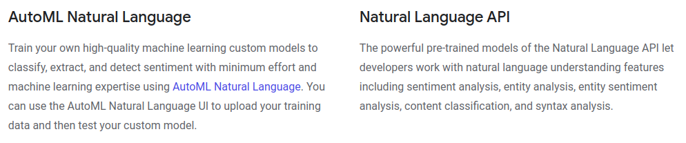
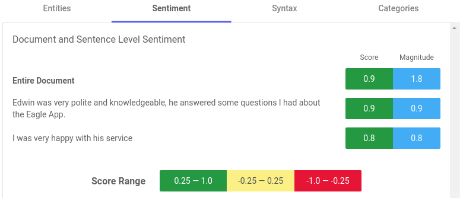

Gotowe rozwiązania NLP
od Amazona i Google

Paweł Dulak
- programista / PM w Binary Minds
- ColdFusion
- AWS
- Security
- Practical machine learning
Jest tyle rozwiązań NLP...
Plusy
- działa od pierwszej minuty
- bez trenowania modelu
- dobry, stabilny model
- hosting modelu (silnika), API
Minusy
- opłaty
- brak (małe) możliwości modyfikacji
- ograniczona lista obsługiwanych języków
- brak kontroli
Amazon Comprehend
https://aws.amazon.com/comprehend/Amazon Comprehend
- Keyphrase Extraction
- Sentiment Analysis
- Entity Recognition
- Medical Information Extraction
- Language Detection
- Topic Modeling
- Custom Entities
- Custom Classification
Amazon Comprehend
ile to kosztuje?

10.000 komentarzy ≈ 12 dolarów
Amazon Comprehend
import boto3
#initialize comprehend module
c = boto3.client(service_name='comprehend', \
region_name='us-east-1')
#call comprehend methods
sentiment = c.detect_sentiment(Text=comments, \
LanguageCode='en')
keyphrases = c.detect_key_phrases(Text=comments, \
LanguageCode='en')Amazon Comprehend
'Edwin was very polite and knowledgeable, he answered some questions I had about the Eagle App. I was very happy with his service'
# -- key phrases --
[
{"Text": "Edwin", "Score": 0.9967, "BeginOffset": 0, "EndOffset": 5},
{"Text": "some questions", "Score": 0.9907, "BeginOffset": 53, "EndOffset": 67},
{"Text": "the Eagle App", "Score": 0.9971, "BeginOffset": 80, "EndOffset": 93}
]
Amazon Comprehend
'Edwin was very polite and knowledgeable, he answered some questions I had about the Eagle App. I was very happy with his service'
# -- entities --
[
{"Text": "Edwin", "Score": 0.9948, "Type": "PERSON", "BeginOffset": 0, "EndOffset": 5},
{"Text": "Eagle App", "Score": 0.8695, "Type": "TITLE", "BeginOffset": 84, "EndOffset": 93}
]
Amazon Comprehend
'Ramon was professional and knowledgeable. I was in a bit of a rush and Ramon was accommodating to my schedule and helped me as quickly and efficiently as he could. This was the second time I had seen Ramon, and he did great both times.'
# -- entities --
[
{"Text": "Ramon", "Score": 0.9865, "Type": "PERSON", "BeginOffset": 0, "EndOffset": 5},
{"Text": "Ramon", "Score": 0.9977, "Type": "PERSON", "BeginOffset": 71, "EndOffset": 76},
{"Text": "second time", "Score": 0.9089, "Type": "QUANTITY", "BeginOffset": 177, "EndOffset": 188},
{"Text": "Ramon", "Score": 0.9937, "Type": "PERSON", "BeginOffset": 200, "EndOffset": 205},
{"Text": "both times", "Score": 0.7855, "Type": "QUANTITY", "BeginOffset": 224, "EndOffset": 234}
]
Amazon Comprehend
'Edwin was very polite and knowledgeable, he answered some questions I had about the Eagle App. I was very happy with his service'
# -- sentiment --
{
"SentimentScore": {
"Mixed": 0.004272643011063337,
"Positive": 0.9859381318092346,
"Neutral": 0.009591725654900074,
"Negative": 0.00019745792087633163
},
"Sentiment": "POSITIVE"
}
Amazon Translate
https://aws.amazon.com/translate/Google Natural Language
https://cloud.google.com/natural-language/ Google Natural Language
- Syntax Analysis
- Entity Analysis
- Sentiment Analysis
- Content Classification
Google Natural Language
https://cloud.google.com/automl/Google Natural Language
ile to kosztuje?
Google Natural Language
from google.cloud import language_v1
from google.cloud.language_v1 import enums
#initialize module
client = language_v1.LanguageServiceClient()
#prepare document
type_ = enums.Document.Type.PLAIN_TEXT
language = "en"
document = {"content": text_content, "type": type_, \
"language": language}
encoding_type = enums.EncodingType.UTF8
#analyze sentiment
response = client.analyze_sentiment(document, \
encoding_type=encoding_type)Google Natural Language
Google Natural Language
Google Natural Language
Google Translation
https://cloud.google.com/translate/ponad 100 języków
Przypadek naszego klienta
- Potrzeba analizy wydźwięku komentarzy (konkurencja już miała takie rozwiązanie)
- Potrzeba kategoryzacji komentarzy
Dlaczego wybraliśmy AWS
- brak danych do trenowania modelu
- brak doświadczenia
- budżet
Co z tego mamy
Co z tego mamy
- niemal 140 000 komentarzy w 14 miesięcy
- wyniki widoczne od razu
- pierwszy krok do czegoś dalej
- doświadczenie
- dane
Niespodzianki
{ "No errors" :
[ "Amazon": "Negative", "Google": "positive 0.5" ] }
{ "none!!!!!!!" :
[ "Amazon": "Negative", "Google": "neutral 0" ] }
{ "Nothing everything good." :
[ "Amazon": "Negative", "Google": "negative -0.4" ] }
{ "No improvement needed" :
[ "Amazon": "Negative", "Google": "neutral 0" ] }
{ "She did well. No suggestions." :
[ "Amazon": "Negative", "Google": "neutral 0" ] }
{ "Should was on top of everything; there is nothing \
to add when you are a professional" :
[ "Amazon": "Negative", "Google": "Negative -0.6" ] }
{ "Just like the others, Amanda was very young and was \
unable to make me feel like a valued member" :
[ "Amazon": "Positive", "Google": "mixed -0.2" ] }
Kropka nienawiści
{ "nothing" :
[ "negative": "0.4106", "neutral": "0.4772" ] }
{ "Nothing." :
[ "negative": "0.5984", "neutral": "0.3081" ] }
Dziękuję
Pytania?

pawel (at) dulak.pl